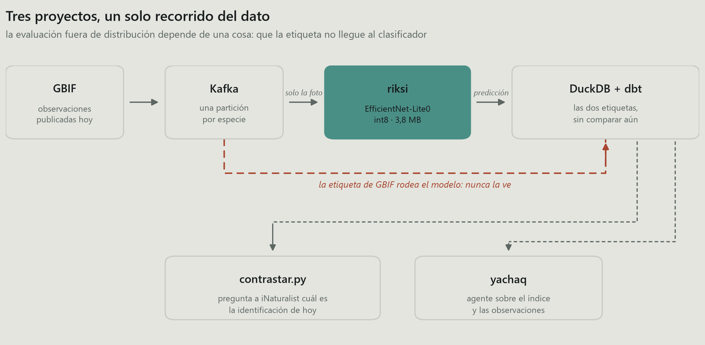
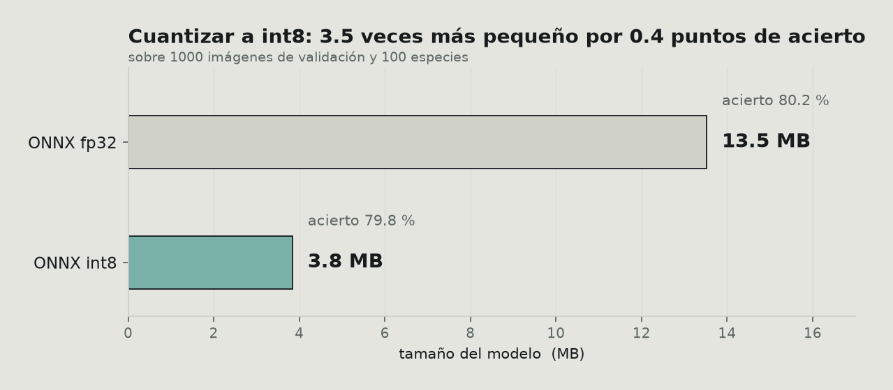
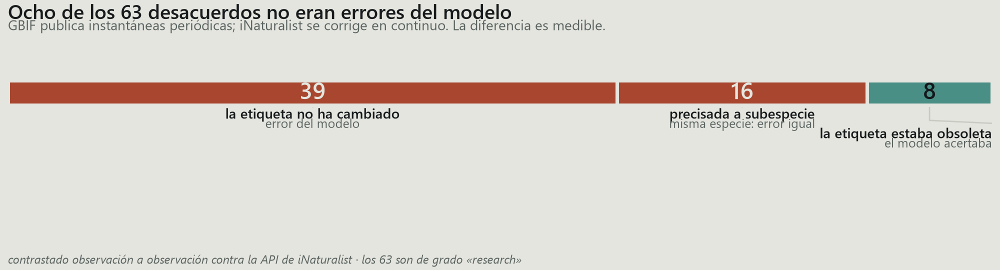
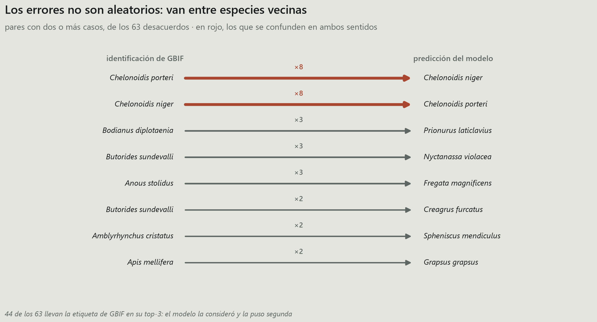
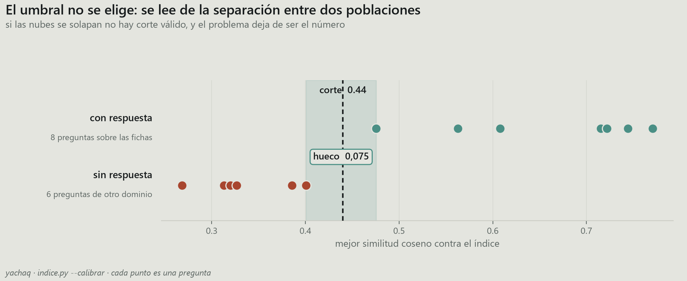
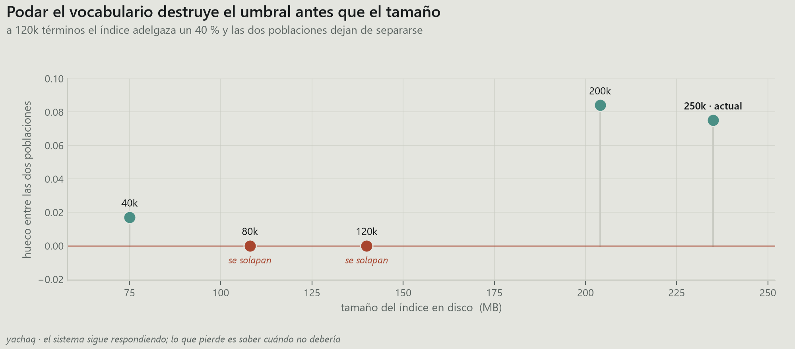
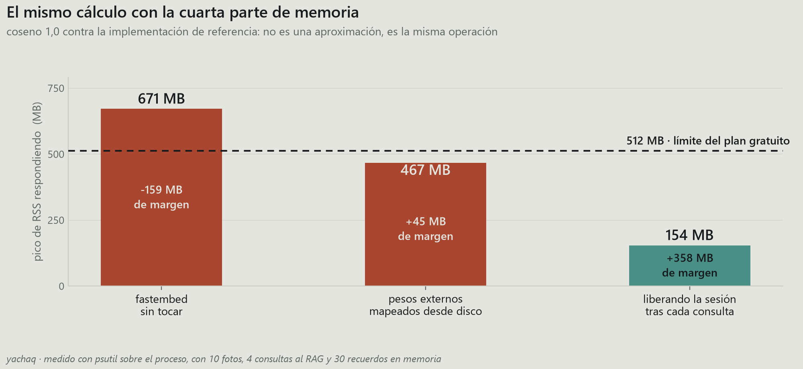

machinelearning, python, mlops, datascience · Ctrl+P to save as PDF
I trained a classifier over a hundred Ecuadorian species, built a pipeline to evaluate it on observations nobody had curated, and put an agent on top of both. Three repositories, roughly three months.
What follows isn't how I built them. It's the pattern I found reviewing them: every time I replaced a convenient estimate with a correct measurement, the number got worse. Four times. In all four the original figure was defensible, published, and describing something other than what I thought.
The asymmetry has a mechanical explanation. A metric that comes out badly pushes you to recheck the computation; one that comes out well gets published. So the error only survives in one direction, and not the harmless one.
The minimum needed to follow the rest:
| riksi | EfficientNet-Lite0, a hundred classes, 3.8 MB in int8. Inference in-browser on ONNX Runtime Web |
| riksi-radar | Kafka → classifier → DuckDB → dbt. Consumes GBIF observations and classifies them without access to the label |
| yachaq | An agent over both: retrieval, persistent memory, MCP server |

The detail that makes the setup valid is the red line: the GBIF label travels alongside and never reaches the classifier. Both are stored, compared afterwards. Without that separation there is no evaluation, only a lookup.
The model reaches 79.8 % top-1 accuracy over 1000 validation images. That figure is measured correctly and isn't one of the four that fall apart.
Worth pinning down the cost of quantization first, since it's the only decision in the project that came for free:

Four tenths of a point for a 3.5x size reduction. For a model that downloads into someone's browser over mobile data, that isn't a debate.
The validation set shares a generating distribution with the training set: same sources, same photographers, same framing bias. 79.8 % under those conditions constrains very little about real behaviour.
To measure outside that distribution I built the radar: it consumes observations published on GBIF after training, uploaded by different people, with no curation, and classifies them without access to the label.
Over 400 observations: 337 correct. 84.2 %.
Six points above the validation bank. I published that number with "goes up" in bold.
The arithmetic is right. The interpretation isn't.
The left panel holds the problem: Amblyrhynchus cristatus, the marine iguana, contributes 128 of the 400 observations. The three most frequent classes make up half the set, and of the model's hundred classes only twenty appear at all.
Citizen science doesn't sample uniformly. People photograph what they see, and in the Galápagos they see marine iguanas. That 84.2 % is, in large part, the model's performance on one class, repeated 128 times.
The right panel explains the direction of the bias: the marine iguana is among the classes it handles best (94.5 %). The evaluation distribution is dominated by an easy case, so the micro-average inflates rather than sinks.
Under macro-averaging — every class weighted equally regardless of frequency:
| accuracy | |
|---|---|
| micro-average (per observation) | 84.2 % |
| macro-average (per class) | 78.7 % |
Two queries that differ by a group by:
-- micro: every observation weighs the same
select avg(coincide::int) from observaciones;
-- macro: every class weighs the same
select avg(tasa) from (
select especie, avg(coincide::int) as tasa
from observaciones group by especie
);And here's the result that matters: 78.7 % out of distribution against 78.0 % on the validation bank. The model doesn't improve when it leaves its own split. It performs the same.
That's a considerably duller conclusion and a far more credible one. "No detectable drift" is a finding. "Improves in production" was an artifact of the estimator I picked.
On citizen-science data, publish the macro-average. The micro-average describes the marginal distribution of your classes as much as your model's performance, and gives you no way to tell them apart.
The 5.5-point gap isn't a technicality: it's the magnitude of the sampling bias, expressed in the metric's own units.
Fair objection: 400 observations fit in a CSV.
The real throughput isn't 400. GBIF receives on the order of 130,000 observations a day from Ecuador alone; 1.6 % fall in the model's hundred classes, about 6,000 daily. The 400 are a measurement window, not the flow.
That said, what I learned building it was something else. The broker wouldn't start, and the message pointed at the wrong place:
advertised.listeners cannot use the nonroutable meta-address 0.0.0.0I had already overridden advertised.listeners. It took four attempts to see the complaint wasn't about that one, but about the controller listener, also on
0.0.0.0, from which Kafka derives its advertised address when none is declared:
# the deciding one is the second, not the first
listeners=PLAINTEXT://0.0.0.0:9092,CONTROLLER://localhost:9093
advertised.listeners=PLAINTEXT://localhost:9092The second failure was quieter. The broker kept declaring the consumer dead. By default it delivers 500 records per poll() and expects the next within five minutes. Downloading and classifying 500 photos blows past that comfortably, so the group rebalanced and the commit failed with "the group has already rebalanced", discarding work already done.
consumidor = KafkaConsumer(
TEMA,
max_poll_records=20, # batches that fit inside the interval
max_poll_interval_ms=900_000,
enable_auto_commit=False, # commit after the batch, not before
)enable_auto_commit=False is the part that matters. With auto-commit, Kafka marks as processed what you're still downloading; if the process dies mid-batch, those observations are never redelivered.
It's the general pattern of putting slow work inside a consumer loop: invisible in short tests, breaks under volume.
That left 63 observations where the classifier and GBIF disagreed. Three possible explanations: model error, misidentified observation, or the image doesn't show what the record claims.
I wrote in the README that the pipeline doesn't resolve which applies, and that the Galápagos tortoises appearing repeatedly were a case of "taxonomy disputed among biologists."
I made that last part up. It sounded plausible, it fit, and I never checked it.
There's a fourth explanation, and it's verifiable: GBIF publishes periodic snapshots, not a live mirror of iNaturalist. An observation corrected upstream can still sit in GBIF under the previous identification.
Verification takes two hops. GBIF keeps the iNaturalist identifier in
catalogNumber, which lets you query the identification currently in force:
def _en_inaturalist(clave_gbif):
oc = _pedir(f"{GBIF}/occurrence/{clave_gbif}")
id_inat = oc.get("catalogNumber") # the link back to the source
d = _pedir(f"{INAT}/observations/{id_inat}")
o = d["results"][0]
return {"taxon_hoy": (o.get("taxon") or {}).get("name"),
"grado": o.get("quality_grade"),
"identificaciones": o.get("identifications_count", 0)}The iNaturalist API's photo_id parameter looked like the direct route. It doesn't filter: it returns all 382 million results. Ignored without error.
All 63, two minutes of requests. Twenty-four carry a different label today.
This is where the analysis could have broken, because not all changes mean the same thing:
| change | interpretation |
|---|---|
Anous stolidus → Anous stolidus galapagensis | refinement: the population was narrowed; the species is unchanged and the model is still wrong |
Chelonoidis porteri → Chelonoidis niger porteri | reassignment: the taxon now sits under C. niger |
In the second case the model had predicted Chelonoidis niger. Under current taxonomy, the prediction is correct. The Santa Cruz tortoise came to be treated as a subspecies of C. niger, and GBIF still held the earlier classification.
Counting both kinds of change together would have turned a finding into self-deception. That's why the logic classifying each case is the only piece with tests of its own:
def _juzgar(caso, hoy):
gbif, dice, ahora = caso["gbif"], caso["modelo"], hoy["taxon_hoy"]
if ahora == gbif: return "unchanged"
if _es_hijo(ahora, gbif): return "narrowed"
if ahora == dice or _es_hijo(ahora, dice): return "the model was right"
return "species changed"_es_hijo compares by name components, not with startswith, which would accept a match partway through a word:
def _es_hijo(taxon, especie):
partes, base = (taxon or "").split(), (especie or "").split()
return len(partes) > len(base) and partes[:len(base)] == base
assert not _es_hijo("Anous stolidusa", "Anous stolidus")
assert not _es_hijo("Anous stolidus", "Anous stolidus") # nor its own child
assert _es_hijo("Chelonoidis niger porteri", "Chelonoidis niger")The result:

Eight out of 63 weren't errors. All 63 are research grade on iNaturalist — identifications the community has already validated — so the remaining 55 admit no mitigation.
And the finding still needs discounting. All eight belong to the same taxon. Removing them lifts the macro-average from 78.7 % to 81.2 %, but that corrects one class out of twenty and none of the others: it's the previous case's bias reappearing through another door. The figure I'd still publish is 78.7 %.
What it does leave is something reusable: 13 % of the records I verified had a stale label in GBIF. Anyone training on GBIF data without checking against the source is inheriting that lag unknowingly.
An aggregate error count tells you how many. The pairs tell you which, and that's what's actionable:

The two tortoises are confused in both directions, eight times each way. That isn't scattered error: it's a class pair the model doesn't separate. The diagnosis and the fix — more examples of that pair, or merging the classes — differ from what you'd do about independent errors.
The rest are pairs that share a habitat: the marine iguana against the Galápagos penguin, the honeybee against the red rock crab. I could explain why — same rock, same posture — but that would be exactly the kind of rationalisation that cost me the previous case, so I'll just record the pattern.
And 44 of the 63 carry the GBIF label in their top-3: the model considered it and ranked it second. The distance between 78.7 % and a usable system is shorter than the headline number suggests, if the interface offers three candidates instead of one.
The agent retrieves over fact sheets for the hundred species. The standard question: above what similarity is a retrieved sheet actually relevant.
I set 0.5. Round number, no justification.
What needs measuring isn't the mean similarity but whether the two populations separate: questions the corpus can answer against questions it can't. If the distributions overlap, no threshold works, and the problem stops being the number.

They separate, with a 0.075 gap between the worst answerable question and the best unanswerable one. The midpoint lands on 0.44.
buenas = sorted(mejor(p) for p in con_respuesta) # worst first
malas = sorted((mejor(p) for p in sin_respuesta), reverse=True) # best first
corte = round((buenas[0] + malas[0]) / 2, 2)
if buenas[0] <= malas[0]:
print("THEY OVERLAP: no threshold separates them.")The unanswerable questions are deliberately foreign to the domain — "when did Blade Runner come out?", "rice pudding recipe". If the index doesn't reject those, it rejects nothing, and the threshold is decorative.
The incidental finding came from trying to shrink the index, which took 235 MB, 192 of them the vocabulary table: 250,000 tokens covering some fifty languages, of which this project uses 8,403. It looked like dead weight.

At 120,000 terms the index is 40 % smaller and the threshold ceases to exist: there's no separation left to split. Without measuring the gap, that cut looks free. The system keeps answering; what it loses is the ability to decline, which is the only thing keeping a retrieval system from fabricating context.
The middle identifiers weren't padding from other languages: they're the subwords holding Spanish together. Removing them degrades answerable questions more than the others, which is precisely the wrong direction.
Not a measurement story, but the one that taught the most.
The agent had to fit a free tier: 512 MB. With fastembed, the process reached 671 MB just loading the encoder.

I rewrote inference on ONNX Runtime. Two changes fixed it. First, storing the weights as external data, which gets onnxruntime to memory-map them off disk instead of copying them in:
onnx.save(modelo, str(LIGERO / "modelo.onnx"), save_as_external_data=True, ...)
opciones = ort.SessionOptions()
opciones.enable_cpu_mem_arena = False # no arena that grows and never returns
ort.InferenceSession(ruta, sess_options=opciones)That leaves the process at 457 MB at rest. But the peak while answering reaches 467, and with 45 MB of headroom a 512 MB container dies on the first spike. That's why the second bar stays red despite sitting under the line: the quantity that decides the deployment is the peak, not the resting state.
The second change: releasing the session after each batch instead of holding it.
def vectorizar(textos):
with _candado:
try:
return _vectorizar(textos)
finally:
if SOLTAR:
_sesion.cache_clear()
gc.collect()Reloading costs 0.93 s, so the peak exists only while answering. 154 MB, with 358 to spare. That extra second per query buys keeping retrieval enabled on a free tier; the alternative was switching it off.
It's not an approximation: the cosine between vectors from the two paths is 1.0 and the max component-wise difference is 0.0. It's the same operation.
Two traps along the way, both with no visible symptom:
# wrong: padding weighs as if it were real tokens
v = salida.mean(axis=1)
# right: present tokens only
mascara = lote["attention_mask"].astype(np.float32)[:, :, None]
v = (salida * mascara).sum(axis=1) / np.maximum(mascara.sum(axis=1), 1e-9)enable_padding() with no arguments pads to 512 tokens. A 0.2 s inference starts taking a minute, with no warning. It needs direction="right", pad_id=1, pad_token="<pad>".I also tried quantizing the encoder to int8, like the classifier. It reduces disk but not resident memory: 252 → 135 MB on disk, 395 → 397 in RAM, because onnxruntime decompresses the weights on load. The threshold gap also narrowed from +0.101 to +0.085. Dropped on both counts.
So this doesn't read like everything collapsed:
A figure that improves deserves more scrutiny than one that worsens. In all four cases, the number I liked was describing my dataset rather than my model.
Publish the macro-average. On citizen-science data, the micro-average is largely a description of which species are photogenic.
Verify the explanation that makes you look good. "Taxonomy disputed among biologists" sounded like I had command of the domain. Two HTTP requests were enough to disprove it, and the truth turned out more useful.
Classify changes before counting them. Twenty-four modified labels looked like twenty-four errors that weren't mine. It was eight. The other sixteen were mine, dressed as the same thing.
A threshold without a measured separation is decoration. And if the system keeps working with a useless threshold, nobody will ever find out.
Measure the peak, not the steady state. 457 MB fits inside 512 on paper. In execution, the container died.
What this work doesn't support:
All three repositories are open, and every figure in this article comes from a versioned file in them; there's an executable check (--comprobar) in each module that verifies it, including the ones behind these plots: riksi · riksi-radar · yachaq